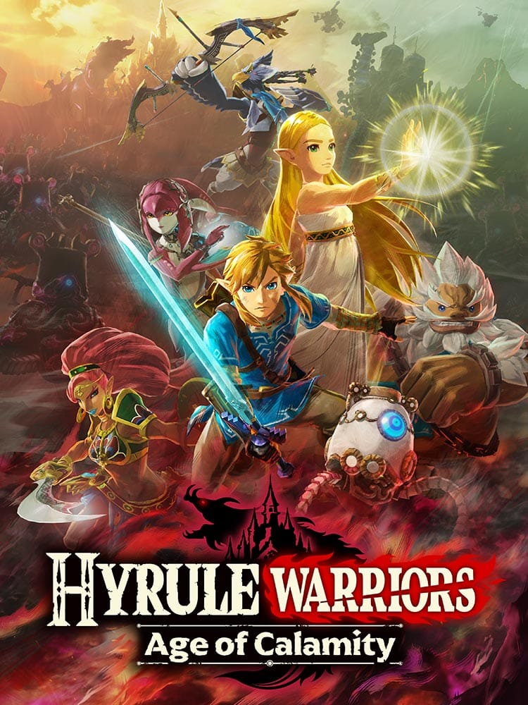
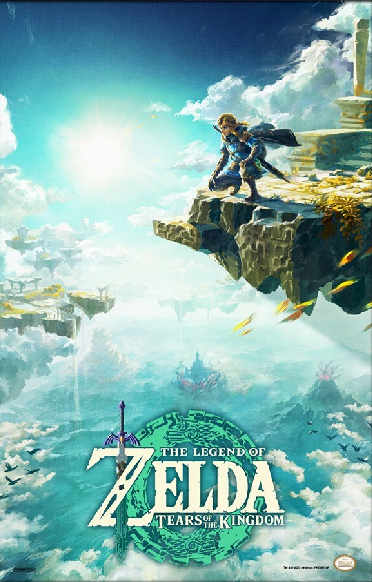

Nom du jeu 1 (date de sortie)
Informations et présentation du jeu 1.

Signature de Lohan
Informations et présentation du jeu 1.

Informations et présentation du jeu 2.

Informations et présentation du jeu 3.

Informations et présentation du jeu 4.

Informations et présentation du jeu 5.

Après 10 000 ans de paix, Ganon, alors connu sous le nom de "Fléau", menace de briser le sceau qui le retient enfermé. Face à l'ampleur de la crise, le roi d'Hyrule, avec l'aide du peuple Sheikah, déterre des gardiens et quatre Créatures Divines, des reliques anciennes conçues il y a 10 000 ans par les Sheikahs pour lutter contre Ganon, et assigne quatre Prodiges, de différentes tribus, à leur commandement. Sentant le réveil de leur maître approcher, de plus en plus de monstres apparaissent en Hyrule. Tout le royaume est en guerre face aux armées de Ganon. Link, auparavant désigné comme chevalier servant de la princesse Zelda, est promu en tant que Prodige Hylien après être passé au rang de chevalier purificateur. Il fut cependant mortellement blessé lors du Grand Fléau, qui est le nom donné au réveil meurtrier de Ganon. Le Fléau prend le contrôle des gardiens et des Créatures Divines, tue les habitants du château et de la citadelle, le roi, les prodiges et Link, laissant seulement Zelda en vie. Celle-ci n'eut d'autre choix que de remettre l'épée de Légende dans son piédestal et de maintenir Ganon enfermé, le temps que Link (placé dans un sommeil profond dans le sanctuaire de la Renaissance) recouvre ses forces.
Après 100 ans de sommeil, Link reprend connaissance et trouve un Hyrule en ruine. Seul hic : il n'a plus aucun souvenir de sa vie d'antan, et doit donc parcourir le monde à la recherche de son passé. Il découvre les Gardiens, les bokoblins, les moblins... Tous ces monstres tentent de le tuer à nouveau. Link n'a que peu de temps pour accomplir ses missions : retrouver ses souvenirs, aider les personnes sollicitant son aide, et surtout vaincre Ganon avant que le sceau maintenu par la princesse Zelda ne s'estompe, et que sa rage ne s'abatte sur Hyrule une bonne fois pour toute. Après une aventure aux quatre coins d'Hyrule pour libérer les Créatures Divines, Link réussit à reprendre possession de l'Épée de Légende et à terrasser Ganon, ce qui permet à Zelda de le sceller pour de bon.

Informations et présentation du jeu 7.

Informations et présentation du jeu 8.
Informations et présentation du jeu 2.